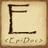

2017-11-17 | STI Evaluation
Digitale Geisteswissenschaften – Epigraphik digital
epidat
Forschungsplattform für jüdische Grabsteinepigraphik
Präsentation https://kollatzthomas.github.io/20171117_STI_evaluation
Thomas
Kollatz |  @kol_t
|
@kol_t
|  KollatzThomas | CC-BY 4.0
KollatzThomas | CC-BY 4.0
Steinheim-Institut für deutsch-jüdische Geschichte, Essen
Geschichte und Umfang
- entwickelt seit 2002
- online seit 2006
- kontinuierlich projektbegleitend weiterentwickelt
- 181 digitale Editionen historischer jüdischer Friedhöfe
- 33.000 Inschriften
- 65.000 Bilddigitalisate
Zeit – Chronologie
Vom 11ten bis zum 20sten Jahrhundert. Zur Zeit 1.100 datierte mittelalterliche Inschriften aus sieben Gemeinden, darunter:
- שו״ם | Schum:
- Speyer
- Worms
- Mainz
- Frankfurt
Zugang zu den Sammlungen
- chronologisch
- regional
- kartenbasiert
- indexbasiert
- bildbasiert
- Volltextsuche
- Visualisierungen
- Tabellen und Listen
- Schnittstellen (maschinenlesbar)
Blumen und Schuhe
Beispiele
Wormser Lilien
Ein einzigartiges florales Symbol "im Heiligen Sand" – Worms


| 1218 | vor 1290 | 1296 | 1320 | 1492 | 1493 |
| wrm-103 | wrm-423 | wrm-999 | wrm-1090 | wrm-692 | wrm-778 |
| Schlomo ben Natan | Channa bat Jehuda | Juta bat Josef | Meir ben Elieser | Jachet bat Ascher Halevi | Dolza bat Schmuel |
Wormser Lilien
in spatio-temporaler Visualisierung mittels DARIAH-DE Geo-Browser
- Ort
- Zeit
- Symbol
- Eigenname
Michael Brocke: The lilies of Worms. In: Zutot 8 (2011),
3-13
http://steinheim-institut.de/cgi-bin/epidat?info=geobrowser
Frankfurter Schuhe
Ein Frankfurter Hauszeichen wird zum Familiennamen


{kind=link}
{kind=link}
{kind=link}
{kind=link}
{kind=link}
{kind=link}
{kind=link}
{kind=link}
| 1607 | 1612 | 1774 | 1782 | 1795 | 1805 |
| ffb-444 | ffb-2057 | ffb-55 | ffb-1584 | ffb-52 | ffb-1678 |
| Schlomo Schuh Grotwol | Breinlen bat Schlomo | Joswel ben Schlomo Schuh | Schönle bat David Rapp | Breinche bat Süskind Leidersdorf | Gitle bat Izek ben Jaakow Hanau SeGaL |
… und illustriert 200 Jahre Schuhdesign – eingraviert in Grabmale
Herausforderung
Symbole und Ornamente, die auf jüdischen Grabmalen anzutreffen sind, ebenso wie Zitate aus Bibel, Traditionsliteratur und Liturgie, die in die Eulogien verflochten sind, die Materialien der Grabmale, der gravierte Schrifttyp etc. sind Phänomene und Elemente, die nicht nur auf innerjüdisches Leben beschränkt sind
- Wie können mehr oder weniger zufälliger, marginalen Funde und Ergebnisse der jüdischen Grabepigraphik bekannt(er) gemacht werden? Wie können sie zu belastbaren Fakten und Quellen benachbarter Wissensdomänen werden
Forschungsdaten
| Publikation unter freien und offenen Lizenzen | Creative Commons Lizenz |  |
| Ausgabe in dokumentierten, system- und programmunabhängigen Standardformaten | EpiDoc: TEI XML for epigraphic Documents |  |
| Bereitstellung über (maschinenlesbare) Datenschnittstellen – frei verfügbar | How to harvest epidat records |
Normdaten und Thesauri
| Iconclass |
a multilingual classification system for cultural content |
Symbol: Lilie | 25G41(LILY) |
| Arts and Architecture Thesaurus | to improve access to information about art, architecture, and material culture |
Objekt|Konzept: Schuh | 300046065 |
| Thesaurus of Geographic Names | TGN is intended to aid cataloging, research, and discovery of art historical, archaeological, and other scholarly information. |
Ort: Frankfurt | 7005293 |
| GND | Die Gemeinsame Normdatei (GND) ist eine Normdatei für Personen, Körperschaften, Konferenzen, Geografika, Sachschlagwörter und Werktitel |
Person: Rothschild, Meyer Amschel | 11879132X |
Epigraphic Documents in TEI XML
EpiDoc is an international, collaborative effort that provides
guidelines and tools for encoding scholarly and educational editions of ancient
documents. It uses a subset of the Text Encoding Initiative's standard for the
representation of texts in digital form and was developed initially for the
publication of digital editions of ancient inscriptionssee: https://sourceforge.net/p/epidoc/wiki/Home/
<!-- person -->
<profileDesc>
<particDesc>
<listPerson>
<person xml:id="ffb-80-1" sex="1">
<persName ref="http://d-nb.info/gnd/11879132X">
Meir Rothschild ben Anschel Rothschild
</persName>
<death when="1812-09-19"/>
</person>
</listPerson>
</particDesc>
<langUsage>
<language ident="he" usage="100">Hebrew</language>
</langUsage>
</profileDesc>
Linked Open Data – hin …
{kind=link}
Identifikatoren als Verbindungen
Die GND-ID erlaubt effizient, dynamisch und in Echtzeit weitere Onlineresourcen, die Bezug auf die betreffende Person nehmen, zu aggregieren.

http://steinheim-institut.de/cgi-bin/epidat?id=ffb-80-1
http://steinheim-institut.de/daten/beacon.txt
Linked Open Data – … und zurück

Semantische Webtechnologien
Subjekt Prädikat Objekt .
epidat-ID sameAS GND-ID .
ffb-80-1 sameAS 11879132X .
Epigraphische Datenbanken
Sharing Data: Die Projekte PEACE Portal und DARIAH-DE
| IIP – Inscriptions of Israel | Palestine | epidat – Database of Jewish Epigraphy | DIO – Deutsche Inschriften Online | |
|---|---|---|---|
| online |  |
 |
|
| Inschriften | 3.423 | 33.065 | ca. 18.000 |
| Zeit | 500 BCE - 640 CE | Mitte 11tes - 20tes Jahrhundert | 500-1650 |
| Raum | Israel | Palestina | Deutschland | Niederlande | Tschechische Republik | Litauen | Deutschland |
| Inhalt | Verschiedene Inschriftenrengres | Grabinschriften | Verschiedene |
| Format | EpiDoc: TEI XML for Epigraphic Documents | ||

source: Rufus Pollock
Linked Open Data
DARIAH-DE USE-CASE
- Von
EpiDoc – TEI XML - über den
xTripels webservice - zu semantischen RDF-statements (
Triples)